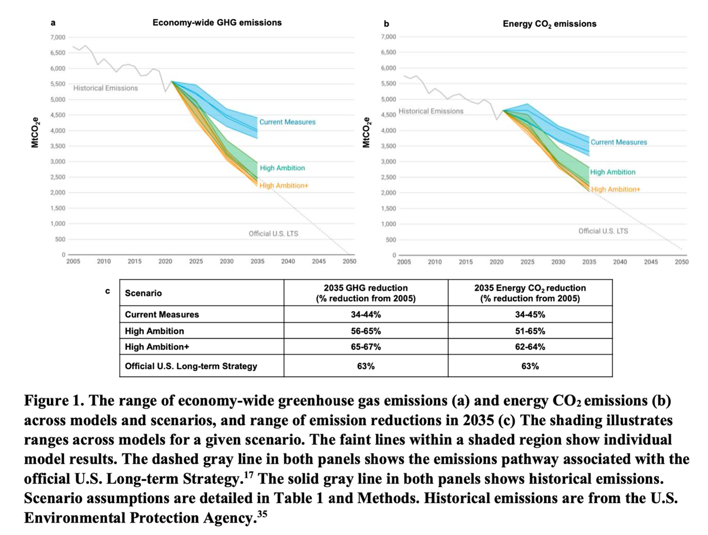

As the importance of nationally determined contributions (NDCs) grows in achieving the global greenhouse gas reduction targets outlined in the Paris Agreement, attention is particularly focused on the United States’ 2035 target, expected to be submitted in 2025.
While the U.S. has set higher ambitions through its current NDC and long-term strategy (LTS) compared to previous commitments, stronger mitigation efforts beyond 2030 are essential to limit global warming to below 1.5°C. As the world’s largest economy and the second-largest emitter of greenhouse gases, the U.S. holds a pivotal position in influencing international emission reduction efforts.

A new study published in Nature Communications evaluates GHG emissions and energy system transformations across policy scenarios to analyze policy options for setting the United States’ 2035 NDC. Four modeling teams assessed a range of policy combinations, from scenarios considering only current policies—including the Inflation Reduction Act (IRA) and the Bipartisan Infrastructure Law (BIL)—to scenarios incorporating additional federal and state-level measures. The study compares mitigation pathways using advanced policy scenarios such as High Ambition and High Ambition+. By employing a multi-model approach, the study addresses structural uncertainties that single-model studies cannot capture and assesses the feasibility and variability of policy implementation. This analysis provides an important framework for policymakers to set ambitious yet achievable mitigation targets, supporting the pathway to achieving net-zero emissions by 2050.
This study presents a detailed multi-model analysis of potential U.S. emissions pathways under various policy scenarios, highlighting the significance of enhanced federal and state measures for achieving 2035 climate goals. The findings emphasize the critical need for ambitious action, including electrification, renewable energy investments, and industrial decarbonization. However, the study acknowledges challenges such as policy durability, infrastructure constraints, and consumer adoption barriers. By addressing these challenges through targeted incentives, investments in research and development, and enabling policies, the study provides policymakers with a framework for setting realistic yet ambitious emissions reduction targets that align with the global pursuit of net-zero goals under the Paris Agreement.
“As countries prepare to submit updated climate pledges for 2035, this study underscores the importance of the academic community in providing quantitative support for scientifically sound policymaking,” said Prof. Haewon McJeon of KAIST Graduate School of Green Growth and Sustainability. “The fact that multiple research teams independently conclude a 56-67% emission reduction potential demonstrates that higher-ambition climate pledges are feasible for 2035.”
[paper link]: https://doi.org/10.1038/s41467-025-55858-2
한국어 요약
미국 2035년 NDC 수립을 위한 다중 모델 연구
파리협정에서 제시된 글로벌 온실가스 감축 목표를 달성하기 위해 각국이 제출하는 NDC의 중요성이 커지고 있는 가운데, 특히 2025년에 제출 예정인 미국의 2035년 목표에 이목이 집중되고 있다. 미국은 현재의 NDC와 장기 전략을 통해 이전보다 더 높은 목표를 제시했지만, 지구 온난화를 1.5°C 이하로 제한하기 위해서는 2030년 이후 더 강력한 감축 노력이 필요하다. 세계 최대 경제국이자 두 번째로 큰 온실가스 배출국인 미국은 국제적 감축 노력에 중대한 영향을 미치는 위치에 있다.
국제 학술지 네이처 커뮤니케이션에 게재된 본 연구는 다양한 정책 시나리오를 통해 미국의 2035년 NDC 설정을 위한 정책 옵션을 분석하며, 온실가스 배출과 에너지 시스템 전환을 평가한다. 네 개의 모델링 팀이 인플레이션 감축법(IRA)과 초당적 인프라 법안(BIL)을 포함한 현재 정책부터 추가적인 연방 및 주 차원의 조치를 포함한 정책 조합을 평가했으며, 고도 목표 및 고도 목표+와 같은 시나리오를 통해 구조적 불확실성을 다루고 정책 실행 가능성을 평가한다. 이를 통해 정책 입안자들에게 야심 차면서도 실현 가능한 감축 목표를 설정할 수 있는 중요한 프레임워크를 제공한다.
연구 결과는 전기화, 재생에너지 투자, 산업 탈탄소화와 같은 야심찬 행동의 필요성을 강조하는 동시에, 정책 지속 가능성, 인프라 제약, 소비자 수용성 등의 도전 과제를 함께 제시한다. 맞춤형 인센티브, 연구 및 개발 투자, 실행 가능한 정책을 통해 이러한 과제를 해결하는 방안을 제시하며, 글로벌 넷제로 목표에 대한 행동을 지원한다.
KAIST 녹색성장지속가능대학원의 전해원 교수는 “2035년 NDC를 준비하는 국가들 사이에서, 이 연구는 과학적으로 신뢰할 수 있는 정책 결정을 위해 학계가 정량적 데이터를 제공하는 것의 중요성을 보여준다. 여러 연구 팀이 독립적으로 56-67%의 감축 가능성을 예측했다는 것은2035년에 상향된 배출량 감축 목표가 실현 가능하다는 것을 보여준다.” 라고 말하였다.